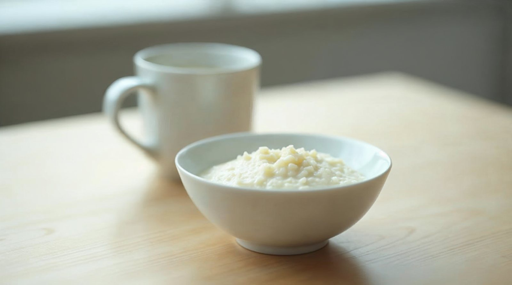
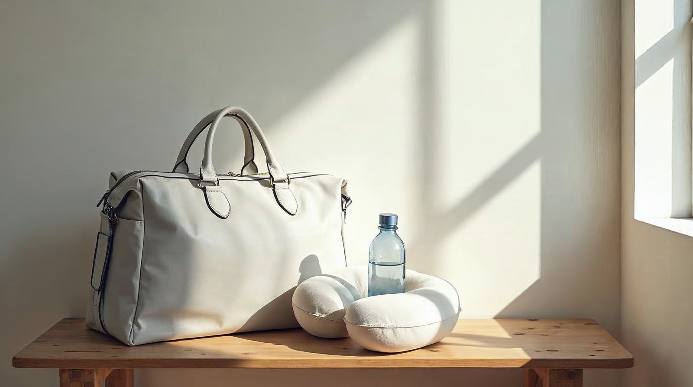
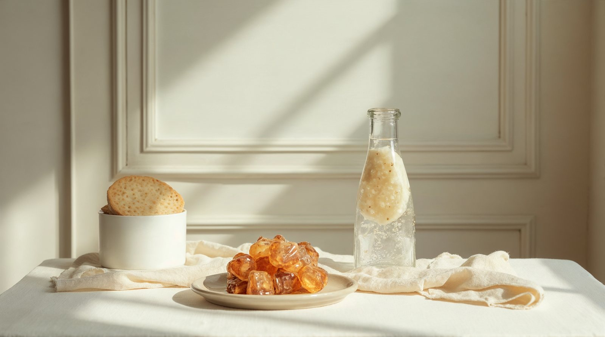
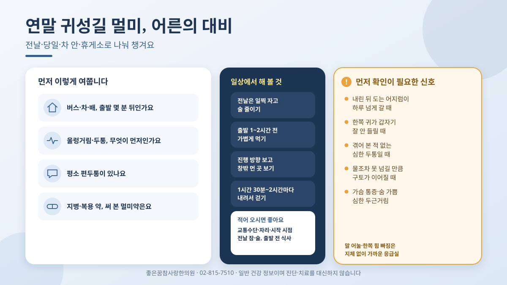

이종호 한의사 감수좋은꿈참사랑한의원 대표원장 (한의사 면허번호 19769)발행 2026-11-27 · 수정 2026-11-27
이 글의 차례
연말에 고향이나 처가·시댁에 가는 고속버스, 가족 여행의 굽은 산길, 섬으로 가는 배에서 속이 울렁이고 식은땀이 나며 머리가 지끈거리고 어지럽다면, 어른이라도 흔히 겪는 멀미일 가능성이 큽니다. 멀미는 귀 안쪽의 평형 기관이 느끼는 흔들림과 눈이 보는 장면이 서로 맞지 않을 때 뇌가 혼란을 느껴 생기는 것으로 설명합니다.
그래서 휴대전화나 책을 내려다보고 있을 때, 창밖이 잘 보이지 않는 뒷자리에 앉았을 때, 히터가 세고 공기가 답답할 때, 빈속이거나 반대로 기름진 음식을 많이 먹었을 때, 전날 잠이 부족하거나 술을 마셨을 때 더 심해지기 쉽습니다.
출발 전에는 앞쪽 자리를 고르고, 1~2시간 전에 가볍게 먹고, 차 안에서는 먼 곳을 보며 환기를 자주 하는 것부터 챙겨 보세요. 멀미약은 녹내장, 전립선 비대, 심장 질환 같은 지병과 복용 약을 약사에게 먼저 알린 뒤 고르고, 운전할 사람은 졸음이 올 수 있는 약을 피합니다.
다만 차에서 내리고도 빙빙 도는 어지럼이 하루 넘게 이어지거나, 말이 어눌해지고 한쪽 팔다리에 힘이 빠지는 증상이 함께 있다면 멀미로 넘기지 말고 바로 응급실로 가세요.
왜 어른도 차나 배에서 멀미가 날까요
- 귀 안쪽 깊은 곳에는 몸의 기울기와 흔들림을 느끼는 평형 기관이 있습니다. 차가 출렁이고 굽은 길을 돌 때 이 기관은 '움직이고 있다'고 알리는데, 눈은 가만히 있는 휴대전화 화면이나 차 안 좌석만 보고 있으면 두 신호가 어긋납니다.
- 뇌가 이 어긋남을 처리하는 과정에서 하품, 침 고임, 식은땀, 얼굴이 창백해짐, 속 울렁거림, 두통과 어지럼이 차례로 나타나는 경우가 많습니다.
- 운전하는 사람이 멀미를 덜 하는 것은 앞을 내다보며 다음 움직임을 미리 예측하기 때문으로 설명합니다. 뒷자리에서 창밖을 보지 못하면 예측이 어려워 더 쉽게 멀미가 납니다.
- 연말 귀성길에는 정체로 가다 서기를 반복하고, 휴게소 간격이 길어지며, 버스 안이 히터로 덥고 답답해지기 쉽습니다. 방향제, 음식 냄새, 다른 사람의 향수 냄새도 울렁거림을 키웁니다.
- 편두통이 있는 분, 임신 중이거나 생리 전후처럼 호르몬 변화가 있는 시기, 잠이 부족하거나 전날 술을 마신 날에는 평소보다 멀미를 더 쉽게 느낄 수 있습니다.
- 한의학에서는 비위가 약하거나 몸에 담음(정체된 수분)이 있을 때 흔들림에 속이 쉽게 울렁이고 머리가 어지러워진다고 보아, 멀미가 잦은 분의 소화 상태와 몸의 찬 기운을 함께 살핍니다.
먼저 이렇게 여쭙니다
- 어떤 교통수단(버스, 승용차 뒷자리, 배, 비행기)에서, 출발 후 몇 분쯤 지나 시작되는지 여쭙니다.
- 울렁거림, 두통, 어지럼, 식은땀 가운데 무엇이 먼저 오고 무엇이 가장 힘든지 여쭙니다.
- 예전부터 있었는지, 최근 몇 년 사이 새로 생기거나 심해졌는지 여쭙니다.
- 평소 편두통이 있는지, 두통이 있을 때 빛이나 소리에 예민해지는지 여쭙니다.
- 차에서 내린 뒤 얼마나 지나야 가라앉는지, 하루 넘게 흔들리는 느낌이 남는지 여쭙니다.
- 귀가 먹먹하거나 한쪽 귀에서 소리가 나고 잘 안 들리는 증상이 함께 있는지 확인합니다.
- 녹내장, 전립선 비대, 심장 질환, 임신 여부와 복용 중인 약, 예전에 써 본 멀미약과 그때 불편했던 점을 여쭙니다.

일상에서 먼저 해 볼 수 있는 것
출발 전날
- 평소보다 30분이라도 일찍 잠자리에 듭니다. 잠이 부족하면 멀미를 더 쉽게 느끼는 분이 많습니다.
- 송년회가 잡혀 있다면 출발 전날만큼은 술을 피하거나 한두 잔으로 줄이고, 기름진 안주와 늦은 야식을 줄입니다.
- 멀미약을 쓸 계획이라면 전날 약국에 들러 지병과 복용 약을 알리고 미리 골라 둡니다. 붙이는 멀미약은 보통 출발 몇 시간 전에 붙이도록 안내되어 있어 사용법을 미리 확인합니다.
- 비닐봉지, 물티슈, 작은 물병, 껌이나 사탕, 얇은 겉옷을 손 닿는 가방에 따로 챙겨 둡니다.
출발 당일 아침
- 출발 1~2시간 전에 밥 반 공기와 국, 주먹밥이나 크래커처럼 가볍고 기름기가 적은 음식을 먹습니다. 빈속도, 배부른 상태도 멀미를 키우기 쉽습니다.
- 커피를 많이 마시거나 우유, 탄산음료를 연달아 마시는 것은 피하고, 물을 조금씩 챙깁니다.
- 좌석을 고를 수 있다면 고속버스는 앞쪽, 승용차는 조수석, 배는 가운데쯤 아래층, 비행기는 날개 근처 창가를 고릅니다. 흔들림이 덜하고 바깥을 보기 쉬운 자리입니다.
- 꽉 끼는 허리띠나 두꺼운 패딩은 출발 뒤 벗거나 느슨하게 해 배와 가슴을 편하게 합니다.
차 안에서
- 진행 방향을 바라보고 앉아 창밖 먼 곳, 지평선이나 산 능선을 봅니다. 바깥을 보기 어렵다면 차라리 눈을 감고 머리를 등받이에 기대어 고정합니다.
- 휴대전화, 책, 노트북은 되도록 내려놓습니다. 꼭 연락해야 한다면 화면을 눈높이로 올리고 짧게 끝냅니다. 눈을 쓰지 않는 음악이나 오디오를 듣는 쪽을 권합니다.
- 히터 온도를 조금 낮추고, 승용차라면 30분~1시간마다 창문을 몇 분 열어 바깥 공기를 들입니다. 버스에서는 머리 위 송풍구를 얼굴 쪽으로 돌려 둡니다.
- 방향제와 음식 냄새를 줄이고, 차 안에서 기름진 간식을 먹지 않습니다.
- 숨을 천천히 쉬어 봅니다. 코로 4초 들이쉬고 6초쯤 내쉬기를 몇 번 이어 가면 울렁거림에 덜 휘둘린다는 분이 있습니다.
- 손목 안쪽 주름에서 손가락 세 마디쯤 올라간 두 힘줄 사이(내관혈)를 지그시 눌러 보는 분도 있습니다. 아프지 않을 만큼 1~2분씩 눌러 봅니다.
- 생강차나 생강 사탕을 조금 먹어 보는 분도 있는데, 속 쓰림이 있는 분은 양을 적게 합니다.
휴게소와 도착 뒤
- 1시간 30분~2시간마다 휴게소에 들러 차에서 내려 5~10분 바깥 공기를 마시며 걷습니다.
- 휴게소에서는 국물 있는 음식을 조금 먹고, 기름진 튀김이나 단 음료는 줄입니다.
- 도착한 뒤 울렁거림과 두통이 남아 있다면 바로 큰 식사를 하기보다 따뜻한 물을 조금씩 마시고 20~30분 누워 쉬었다가 가볍게 먹습니다.
- 그날 밤은 일찍 자고, 다음 날 아침 몸이 개운한지 확인합니다.
멀미약을 쓸 때 알아 둘 것
- 먹는 멀미약과 붙이는 멀미약은 쓰는 시점과 주의할 점이 다릅니다. 제품 설명서를 먼저 읽고, 지병과 복용 약을 약사에게 알린 뒤 고릅니다.
- 멀미약 가운데에는 졸음, 입마름, 눈이 침침해지는 느낌, 어지럼을 일으킬 수 있는 것이 많습니다. 처음 써 보는 약이라면 운전하지 않는 날에 씁니다.
- 녹내장이 있거나 소변보기가 어려운 전립선 비대가 있는 분, 어르신, 임신 중이거나 수유 중인 분은 특히 약사나 의사와 먼저 상의합니다.
- 붙이는 멀미약을 만진 손으로 눈을 비비면 동공이 커지고 눈이 부실 수 있어, 붙인 뒤에는 손을 씻습니다.
- 멀미약과 술을 함께 하면 졸음이 더 심해질 수 있어, 이동하는 날에는 술을 피합니다.
- 감기약이나 알레르기약에도 졸음을 부르는 성분이 들어 있는 경우가 있어, 함께 먹어도 되는지 약사에게 확인합니다.

상황별 예시
- 예를 들어 연말에 고향 가는 고속버스 뒷자리에서 휴대전화로 영상을 보던 직장인이 1시간쯤 지나 식은땀과 함께 머리가 지끈거린 경우, 다음 번에는 예매할 때 앞쪽 자리를 고르고, 출발 전 가볍게 먹으며, 영상 대신 오디오를 듣고 창밖을 보는 것부터 바꿔 봅니다.
- 예를 들어 처가나 시댁 가는 길에 굽은 산길이 이어져 뒷자리에 앉으면 매번 속이 울렁이는 분이라면, 가족과 미리 이야기해 그 구간만큼은 앞자리에 앉고, 산길에 들어가기 전 휴게소에서 한 번 쉬어 가도록 일정을 짭니다.
- 예를 들어 연말 섬 여행으로 배를 타야 하는데 예전에 심한 뱃멀미를 겪은 분이라면, 녹내장이나 전립선 문제가 없는지 확인한 뒤 약사와 상의해 멀미약을 미리 준비하고, 배 안에서는 가운데쯤 아래층에 앉아 수평선을 바라봅니다.
- 예를 들어 예전에는 멀미를 하지 않았는데 최근 몇 달 사이 차만 타면 어지럽고 두통이 심해지며, 평소에도 빛과 소리에 예민한 두통이 잦아진 경우에는 편두통과 관련된 어지럼일 수 있어 진료를 받아 보는 것이 좋습니다.
자주 하는 오해
- 멀미는 아이들만 하는 것이고 어른이 되면 저절로 없어진다고 여기기 쉽지만, 어른도 피로와 잠, 호르몬 변화, 편두통 등에 따라 얼마든지 멀미를 느낄 수 있습니다.
- 빈속으로 타야 덜 토한다고 생각하는 분이 많지만, 완전한 빈속은 오히려 울렁거림을 키우기 쉬워 가볍게 먹고 타는 편을 권합니다.
- 차에서 자 버리면 된다며 전날 밤을 새우는 분도 있는데, 잠이 부족하면 깨어 있는 동안 멀미가 더 심해지기 쉽습니다. 차 안에서 자연스럽게 잠드는 것과 전날 잠을 줄이는 것은 다릅니다.
- 멀미약은 아무나 먹어도 된다고 여기기 쉽지만, 졸음과 입마름, 시야 흐림이 생길 수 있고 지병에 따라 더 조심해야 하는 경우가 있습니다.
- 내리고 나서도 어지러우면 멀미가 덜 풀린 것이라고만 생각하기 쉽지만, 하루 넘게 빙빙 도는 어지럼이 이어지거나 귀 증상이 함께 있다면 다른 원인을 확인해야 합니다.
스스로 점검해 보세요
- 차 안에서 휴대전화나 책을 보면 20~30분 안에 속이 울렁인다.
- 뒷자리나 버스 뒤쪽에 앉으면 유난히 멀미가 심하다.
- 히터가 세고 공기가 답답한 차 안에서 머리가 지끈거린다.
- 전날 잠이 부족하거나 술을 마신 날 멀미가 더 심했다.
- 평소에도 빛이나 소리에 예민한 두통이 자주 있다.
- 내린 뒤 몇 시간이 지나도 머리가 무겁고 속이 가라앉지 않는다.
- 멀미약을 쓴 뒤 졸음이나 입마름, 눈이 침침한 느낌을 겪은 적이 있다.
한의원에서 함께 살필 수 있는 경우
- 평소에도 소화가 더디고 명치가 답답하며, 흔들림이나 냄새에 쉽게 울렁거리는 경우
- 멀미 뒤 두통과 어지럼이 오래 남고, 평소 잠이 얕고 쉽게 지치는 경우
- 손발이 차고 배가 차가우며, 몸이 잘 붓고 무거운 경우
- 장거리 이동이 잦은 일이나 연말 일정을 앞두고 몸 상태를 미리 살펴 두고 싶은 경우
좋은꿈참사랑한의원에서는 첫 방문 때 멀미가 언제부터, 어떤 교통수단에서, 어떤 순서로 오는지 먼저 여쭙고, 두통과 어지럼의 모양, 귀 증상, 평소 잠과 소화를 차례로 정리합니다.
그다음 맥부터 짚어 기운의 정도와 몸의 찬 기운을 살피고, 혀와 배를 함께 보아 비위의 상태와, 명치가 답답하거나 배에서 출렁이는 소리가 나는지 같은 정체된 수분의 모습을 확인합니다. 그 위에서 출발 전 식사와 잠, 차 안에서의 자세와 환기 같은 생활 준비를 함께 정하고, 필요하면 침이나 한약 같은 한방 진료를 상의합니다.
귀 증상이 함께 있거나 어지럼이 이동과 상관없이 이어지면 이비인후과나 신경과 진료를 먼저 권해 드립니다. 연말 이동을 다녀오신 뒤에는 어떤 준비가 맞았는지 이어서 여쭤 다음 이동을 함께 준비합니다.

얼마나 지켜보고 언제 상담할까요
- 대부분의 멀미는 차에서 내리고 쉬면 몇 시간 안에 가라앉습니다. 그날 밤 푹 자고 나면 다음 날 개운한지 살펴봅니다.
- 위에서 말한 준비를 두세 번 해 보았는데도 짧은 거리에서조차 멀미가 심하다면 상담을 받아 보세요.
- 내린 뒤에도 흔들리는 느낌이 며칠 이어지거나, 이동과 상관없이 어지럼이 자주 생기면 진료를 받습니다.
- 아래 신호가 있으면 지켜보지 말고 바로 진료를 받거나 가까운 응급실을 찾습니다.
이렇게 기록해 오시면 상담이 쉬워집니다
- 멀미가 난 날의 교통수단, 자리, 걸린 시간, 시작된 시점
- 출발 전 식사 내용과 시각, 전날 잠과 술
- 울렁거림, 두통, 어지럼, 식은땀이 나타난 순서와 가라앉기까지 걸린 시간
- 평소 두통의 빈도와 모양, 귀 증상 여부
- 써 본 멀미약 이름과 불편했던 점, 복용 중인 약과 지병
- 생리 주기나 임신 가능성(해당되는 경우)
이런 증상은 먼저 확인이 필요합니다
- 차에서 내린 뒤에도 빙빙 도는 어지럼이 하루 넘게 이어지고 걷기 힘든 경우
- 한쪽 귀가 갑자기 잘 안 들리거나, 귀울림과 먹먹함이 어지럼과 함께 온 경우
이런 신호가 있으면 한의원보다 가까운 병원이나 응급실을 먼저 찾으세요.
관련 글

여쭙는 것
- 어떤 교통수단(버스, 승용차 뒷자리, 배, 비행기)에서, 출발 후 몇 분쯤 지나 시…
- 울렁거림, 두통, 어지럼, 식은땀 가운데 무엇이 먼저 오고 무엇이 가장 힘든지 여쭙…
- 예전부터 있었는지, 최근 몇 년 사이 새로 생기거나 심해졌는지 여쭙니다.
생활에서 해 볼 것
- 평소보다 30분이라도 일찍 잠자리에 듭니다. 잠이 부족하면 멀미를 더 쉽게 느끼는…
- 송년회가 잡혀 있다면 출발 전날만큼은 술을 피하거나 한두 잔으로 줄이고, 기름진 안…
- 멀미약을 쓸 계획이라면 전날 약국에 들러 지병과 복용 약을 알리고 미리 골라 둡니다…
한의원에서 함께 살필 것
- 평소에도 소화가 더디고 명치가 답답하며, 흔들림이나 냄새에 쉽게 울렁거리는 경우
- 멀미 뒤 두통과 어지럼이 오래 남고, 평소 잠이 얕고 쉽게 지치는 경우
- 손발이 차고 배가 차가우며, 몸이 잘 붓고 무거운 경우
먼저 확인이 필요한 신호
- 차에서 내린 뒤에도 빙빙 도는 어지럼이 하루 넘게 이어지고 걷기 힘든 경우
- 한쪽 귀가 갑자기 잘 안 들리거나, 귀울림과 먹먹함이 어지럼과 함께 온 경우
한눈에 보는 표
| 구분 | 핵심 |
|---|---|
| 여쭙는 것 | 어떤 교통수단(버스, 승용차 뒷자리, 배, 비행기)에서, 출발 후 몇 분쯤 지나 시작되는지 여쭙니다. 울렁거림, 두통, 어지럼, 식은땀 가운데 무엇이 먼저 오고 무엇이 가장 힘든지 여쭙니다. |
| 생활에서 해 볼 것 | 평소보다 30분이라도 일찍 잠자리에 듭니다. 잠이 부족하면 멀미를 더 쉽게 느끼는 분이 많습니다. 송년회가 잡혀 있다면 출발 전날만큼은 술을 피하거나 한두 잔으로 줄이고, 기름진 안주와 늦은 야식을 줄입니다. |
| 한의원에서 함께 살필 것 | 평소에도 소화가 더디고 명치가 답답하며, 흔들림이나 냄새에 쉽게 울렁거리는 경우 멀미 뒤 두통과 어지럼이 오래 남고, 평소 잠이 얕고 쉽게 지치는 경우 |
| 먼저 확인이 필요한 신호 | 차에서 내린 뒤에도 빙빙 도는 어지럼이 하루 넘게 이어지고 걷기 힘든 경우 한쪽 귀가 갑자기 잘 안 들리거나, 귀울림과 먹먹함이 어지럼과 함께 온 경우 |
자주 묻는 질문
멀미약은 언제 먹거나 붙이면 되나요?
제품마다 다르지만 먹는 약은 대개 출발 30분~1시간 전, 붙이는 약은 몇 시간 전에 쓰도록 안내되어 있습니다. 설명서를 확인하고, 지병이나 복용 약이 있다면 약사에게 먼저 알려 주세요.
운전하는 사람도 멀미약을 먹어도 되나요?
멀미약 가운데에는 졸음과 시야 흐림을 일으킬 수 있는 것이 많아 운전할 사람은 피하는 편이 안전합니다. 운전자는 잠을 충분히 자고 휴게소에서 자주 쉬어 가세요.
차 안에서 휴대전화를 보면 왜 더 심해지나요?
귀 안쪽은 차의 흔들림을 느끼는데 눈은 멈춰 있는 화면만 보니 두 신호가 어긋나기 때문입니다. 창밖 먼 곳을 보거나 눈을 감고 오디오를 듣는 쪽이 덜 어긋납니다.
멀미가 심한데 한의원에서는 무엇을 보나요?
맥을 먼저 짚고 혀와 배를 보며 소화 상태와 몸의 찬 기운, 피로 정도를 함께 살핍니다. 출발 전 식사와 잠, 차 안 습관을 같이 정리하고, 필요하면 침이나 한약을 상의합니다.
차에서 내렸는데도 하루 종일 어지러우면 어떻게 하나요?
몇 시간 쉬어도 그대로이거나 빙빙 도는 느낌, 귀 증상이 함께 있다면 이비인후과나 신경과 진료를 받아 보세요. 말이 어눌하거나 팔다리에 힘이 빠지면 바로 응급실로 갑니다.
좋은꿈참사랑한의원은 재진 때 지난번 이야기부터 이어서 여쭙니다. 진료시간과 예약은 오시는 길에서 확인하세요.
어디서 상담받을 수 있나요?
좋은꿈참사랑한의원은 서울 동작구 만양로2길 2 신성빌딩 3층·5층(서울 동작구 상도동, 7호선 상도역 3번 출구 근처)에 있습니다. 한의사 3명(이종호 대표원장, 조영기 수석진료원장, 정원영 진료원장)이 진료합니다. 진료시간은 평일 09:30~20:00(점심 13:00~14:00), 토·일·공휴일 09:30~15:00이며, 방문 전 전화로 확인을 권합니다. 예약은 네이버 예약, 카카오톡 상담, 전화 02-815-7510로 받습니다.
이 글은 일반적인 건강 정보이며 개인의 진단이나 치료를 대신하지 않습니다. 증상이 있거나 복용 중인 약이 있다면 진료를 통해 확인하세요. 치료 효과는 개인마다 다를 수 있습니다.
작성 기준: 일반적으로 알려져 있는 건강 정보를 참고해 정리했습니다(대표원장 감수). 증상 기록은 1~2주 동안 하루 1회, 비슷한 시간에 적어 오시면 지난 상태와 비교하기 쉽습니다.